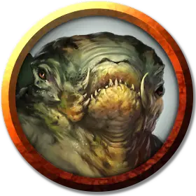

Торбит
Torbit
Средний Гуманоид (Жаболюд), хаотично-злой, именной НИП

Класс Доспеха 15 (проклепанная кожа)
Хиты 78 (12к8 + 24)
Скорость 20 футов, плавая 40 футов
| мод | спас | ||
|---|---|---|---|
| СИЛ | 11 | +0 | +0 |
| ЛОВ | 16 | +3 | +6 |
| ТЕЛ | 14 | +2 | +2 |
| мод | спас | ||
|---|---|---|---|
| ИНТ | 13 | +1 | +4 |
| МДР | 11 | +0 | +0 |
| ХАР | 10 | +0 | +0 |
Навыки Акробатика +6, Восприятие +3, Обман +3, Скрытность +9
Сопротивление урону яд
Чувства пассивное Восприятие 13
Языки Воровской жаргон, Язык Жаболюдов
Опасность 8 (3900 опыта)
Бонус мастерства +3
Особенности
Убийство. В своём первом ходу Торбит совершает с преимуществом броски атаки по существам, которые ещё не совершали ход. Все попадания Торбита по захваченным врасплох существам являются критическими попаданиями.
Увёртливость. Если Торбит подвергается действию эффекта, позволяющего совершить спасбросок Ловкости, чтобы получить только половину урона, Торбит вместо этого не получает урон, если преуспеет в спасброске, и получит лишь половину урона, если провалит спасбросок.
Скрытая атака (1/ход). . Торбит причиняет дополнительный урон 14 (4к6), если попадает по цели атакой оружием, совершённой с преимуществом к броску атаки, или же если цель находится в пределах 5 футов от дееспособного союзника Торбита, и Торбит совершал бросок атаки без помехи.
Амфибия. Торбит может дышать и воздухом и под водой.
Общение с лягушками и жабами. Торбит может обмениваться простыми понятиями с лягушками и жабами, когда говорит на языке Жаболюдов.
Болотный камуфляж. Торбит совершает с преимуществом проверки Ловкости (Скрытность), когда пытается спрятаться на болотистой местности.
Прыжок с места. Торбит совершает прыжки в длину на расстояние до 20 футов и прыжки в высоту на расстояние до 10 футов, хоть с разбегом, хоть без него.
Действия
Мультиатака. Торбит совершает две атаки коротким мечом.
Короткий меч. Рукопашная атака оружием: +6 к попаданию, досягаемость 5 футов, одна цель. Попадание: Колющий урон 6 (1к6 + 3), и цель должна совершить спасбросок Телосложения Сл 15, получая урон ядом 24 (7к6) при провале, или половину этого урона при успехе.
Лёгкий арбалет. Дальнобойная атака оружием: +6 к попаданию, дистанция 80/320 футов, одна цель. Попадание: Колющий урон 7 (1к8 + 3), и цель должна совершить спасбросок Телосложения Сл 15, получая урон ядом 24 (7к6) при провале, или половину этого урона при успехе.
Описание
Торбит мог бы стать королем Черных Языков, если бы не его преданность Кукету. Он ревностно защищает храм, который является средоточием власти его учителя, убивая любого, кто войдет без разрешения.
В дополнение к своему оружию у Торбита одна из частей разбитого посоха нефритового змея [jade serpent staff].